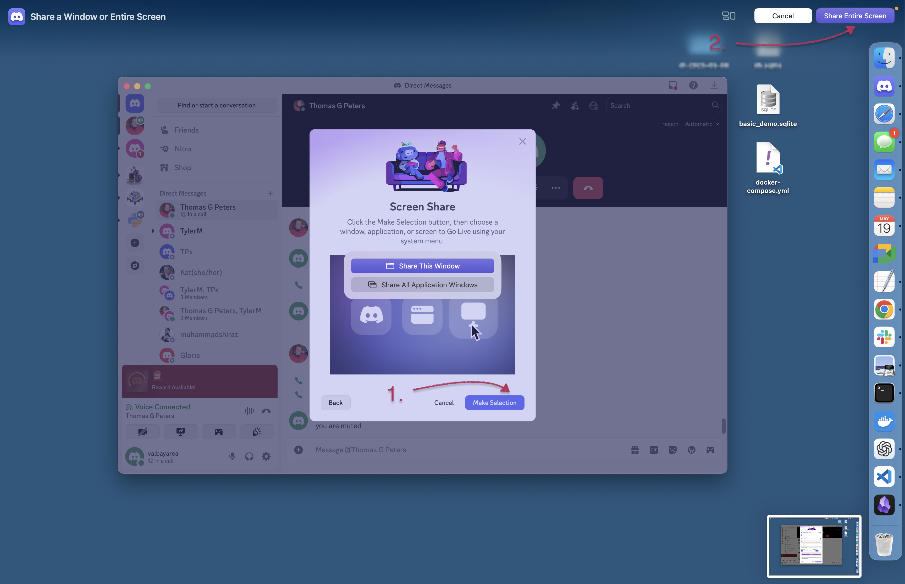
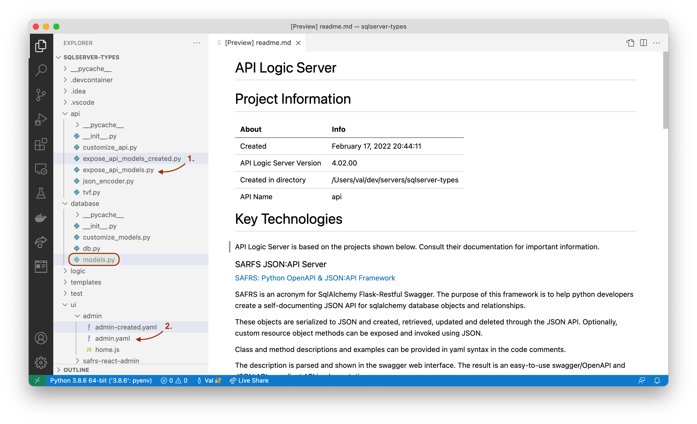
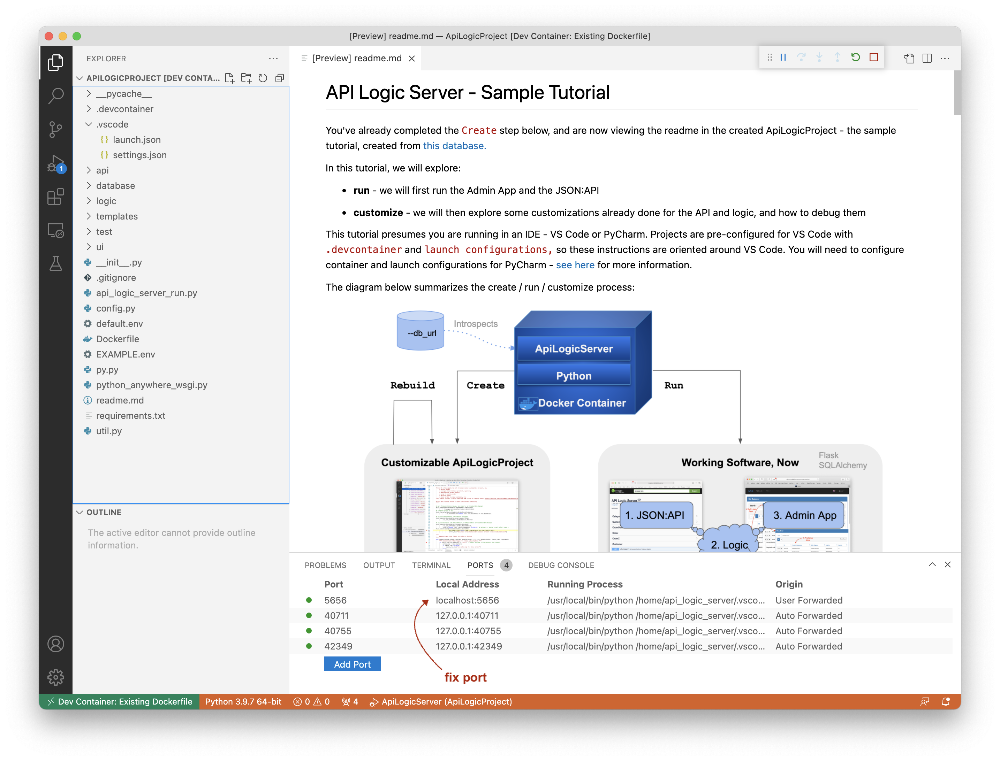
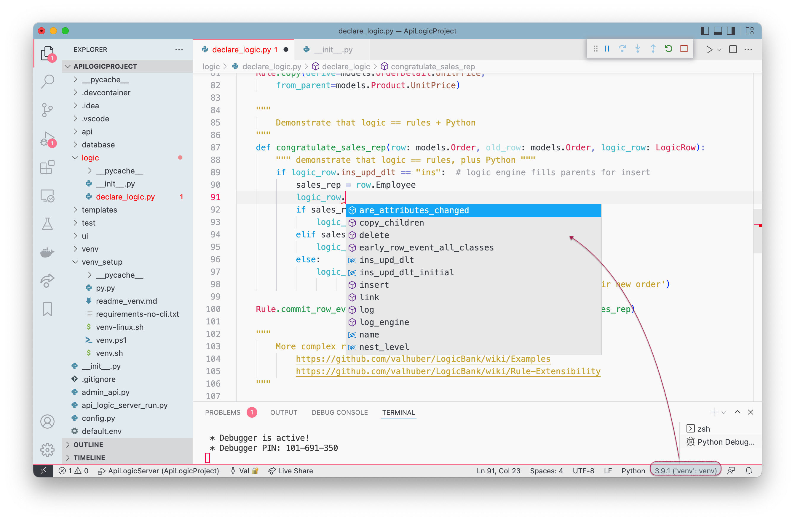
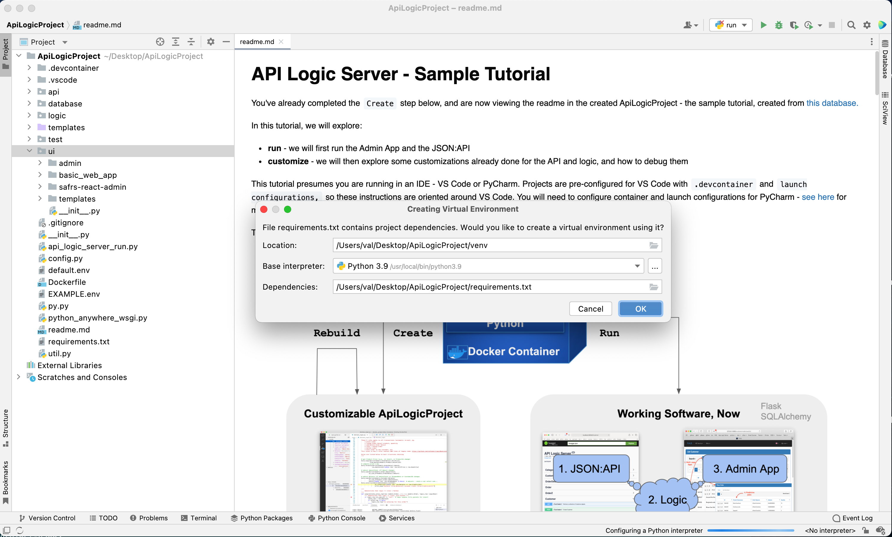
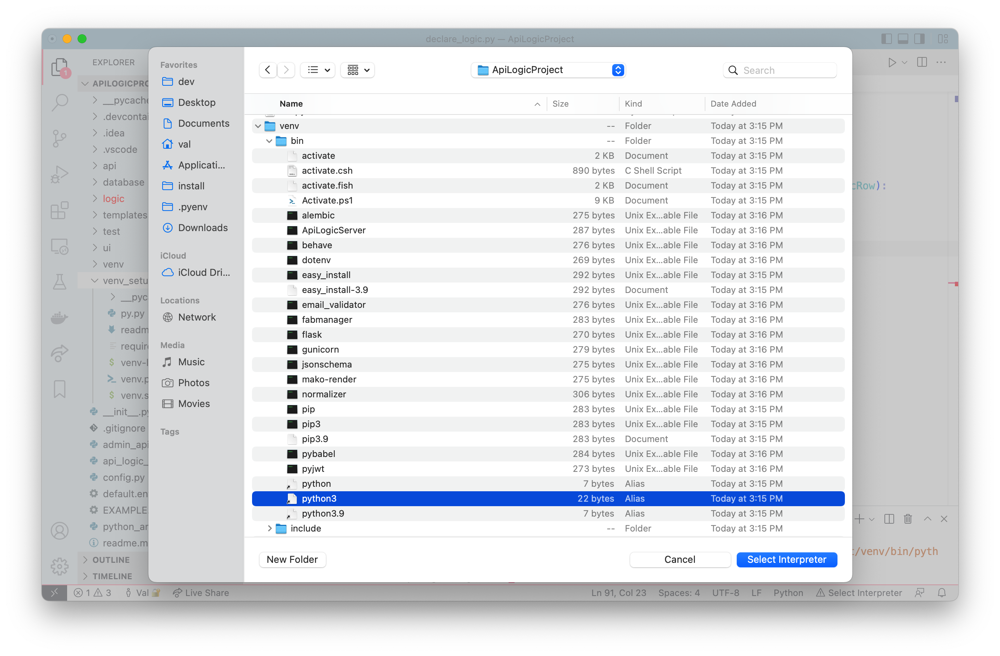
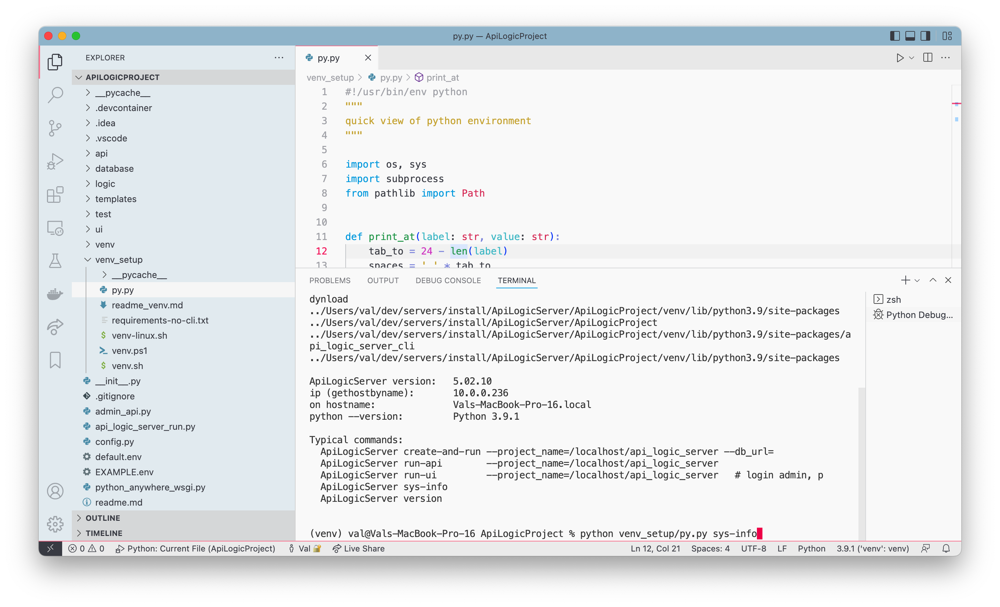
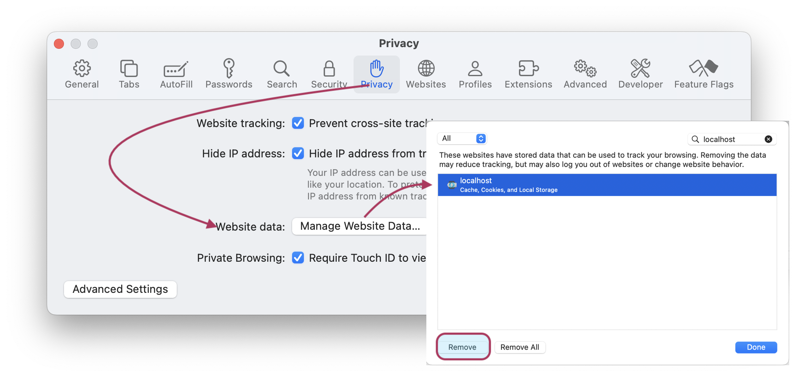
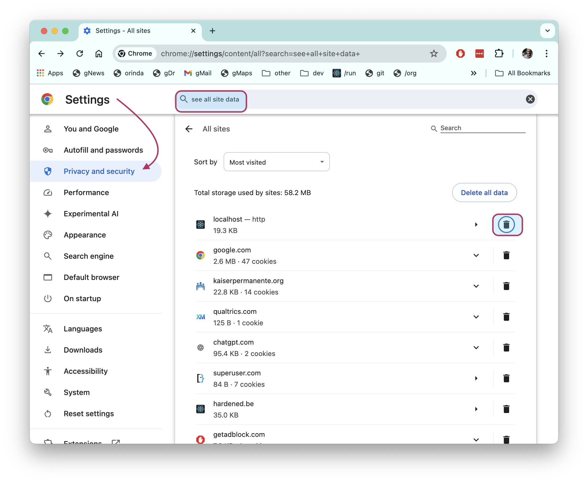

Troubleshooting
Please report bugs as GitHub Issues.
Using Discord
We use Discord for support - join here. You should install the Discord app.
It can be tricky to use Discord for screen sharing - here is the procedure for a mac:
- Start a call with a contact
- Share your screen:

Install Failures
pyodbc fails to install
For API Logic Server releases 5.02.16 and earlier, installation may fail with issues such as:
sql.h not found - your console log might include:
...
src/pyodbc.h:56:10: fatal error: 'sql.h' file not found
Resolve these as explained here.
Unsupported Architecture - MacOS
You may experience alarming messages when you pip install API Logic Server. These can occur installing pyodbc, and can occur when installing API Logic Server, or creating venv for created API Logic Projects. We've seen the following:
× Running setup.py install for pyodbc did not run successfully.
/Library/Developer/CommandLineTools/SDKs/MacOSX.sdk/usr/include/sys/cdefs.h:807:2: error: Unsupported architecture
#error Unsupported architecture
Resolve this by adding this to your ~/.zprofile:
PATH="/Library/Frameworks/Python.framework/Versions/3.10/bin:${PATH}"
export PATH
export ARCHFLAGS="-arch x86_64" # <=== enable this line
Initial Project Creation
Project Creation involves 2 steps that can cause errors, described in the following sub-sections.
Database failed to open
The db_url argument is a SQLAlchemy database uri. For several examples we use in our testing, click here.
Check Connectivity using SQL Tools
A typical cause is lack of connectivity to the database. Use your local database tools to verify connectivity from your machine to the database.
Oracle Connectivity
You may require thick mode.
Also, note that API Logic Server provides 2 diagnostic programs as shown in the link above.
Dynamic model import failed
After the database is opened, it is introspected to build database/models.py, classes used by SQLAlchemy and the API for database access. The models file may fail to compile, often due to unexpected names.
Watch for entries like this in the console log:
6. Create api/expose_api_models.py and ui/basic_web_app/app/views.py (import / iterate models)
.. ..Dynamic model import using sys.path: /Users/val/dev/servers/sqlserver-types/database
===> ERROR - Dynamic model import failed
===> ERROR - Unable to introspect model classes
.. Using db for meta (models not found)
.. See ../Troubleshooting#manual-model-repair
.. ..WARNING - no relationships detected - add them to your database or model
.. .. See https://github.com/valhuber/LogicBank/wiki/Managing-Rules#database-design
You may also encounter errors when the system attempts to start the server, due to invalid model files. These may look like this:
Run created ApiLogicServer with command: python /Users/val/dev/servers/sqlserver-types/api_logic_server_run.py localhost
Traceback (most recent call last):
File "/Users/val/dev/ApiLogicServer/api_logic_server_cli/cli.py", line 253, in find_meta_data
Repair the model, and rebuild_from_model
The system will log errors and attempt to proceed with project creation. You can then:
- Open the project in your IDE, and manually correct the
models.pyfile * E.g., specify proper class names - Rerun
ApiLogicServer, specifying therebuild_from_modelparameter, like this: - You will most likely want to activate the api and app files:
*
api/expose_api_models_created.py- this file is not used in actual operation, but provided so you can merge or copy it overapi/expose_api_models.py*ui/admin/admin-created.yaml- this file is not used in actual operation, but provided so you can merge or copy it overui/admin/admin.yaml
For more on rebuild, see Rebuilding.

Database Issues
Database access requires:
-
Connectivity: for more information, see connectivity
-
Configuration: ensure your project is correctly configured; see Container Configuration
-
Proper database definition: see these notes on Postgresql auto-generated keys.
Docker API Logic Server connecting to dockerized databases
Even when you can access the database to create the project, your dockerized project may fail to connect. This is often caused by not enabling your project for network access. See the link above.
SQL Server - requires `pyodbc'
SqlServer requires the pyodbc package. You can't just pip install it. Attempting to do so will cause errors such as:
sql.h not found - your console log might include:
...
src/pyodbc.h:56:10: fatal error: 'sql.h' file not found
Resolve these as explained in the Quick Start.
Sqlite delete adjustments fail
Sqlite requires special considerations for cascade delete. For more information, click here.
Docker
Docker can dramatically simplify installation, but be aware of the topics described in the sub-sections below:
Docker on Windows
Docker requires Windows Pro for a native install, using hyper-v. If Docker Desktop fails to start, check these instructions.
If you have Windows Home, be aware it's not supported, but some brave souls have found ways.
Docker sometimes fails with multi-level virtualization, such as running Mac > Windows on Fusion.
VS Code with Docker - unable to open file, unable to read file
Under circumstances still unclear, your container may be unable to locate internal files.
Port conflicts can cause re-assignments that need corrections.
These are easy to resolve as explained here.
VS Code - damaged container
You may need to rebuild your container, as described here.
VS code - damaged port settings
You may encounter unexpected port changes, such as using localhost:5657 instead of the usual localhost:5656. Resolve this as shown below:

Permission denied: /home/api_logic_project/instance
Traceback (most recent call last):
File "/home/api_logic_project/./api_logic_server_run.py", line 323, in <module>
api_logic_server_setup(flask_app, args)
File "/home/api_logic_project/./api_logic_server_run.py", line 229, in api_logic_server_setup
db.init_app(flask_app)
File "/usr/local/lib/python3.11/site-packages/flask_sqlalchemy/extension.py", line 325, in init_app
self._apply_driver_defaults(options, app)
File "/usr/local/lib/python3.11/site-packages/flask_sqlalchemy/extension.py", line 576, in _apply_driver_defaults
os.makedirs(app.instance_path, exist_ok=True)
File "<frozen os>", line 225, in makedirs
PermissionError: [Errno 13] Permission denied: '/home/api_logic_project/instance'
This appears to occur when:
- You create the same-named image from 2 different directories (e.g, a staging test)
- And you are using sqlite (default apps use the image for the database)
Currently under investigation.
IDE Issues
Code Completion fails
Code completion depends on a properly installed venv. The digram below shows how code completion exposes valuable services provided by logic_row, and how to verify your venv setting for VSCode:

venv Setup
venv setup is automatic for Docker installs. For local installs, we have seen the issues below.
PyCharm
In some installations, PyCharm may fail when your venv is pre-created. I have found it best to let PyCharm create the venv, like this:

If you encounter issues, consider these suggestions.
VSCode fails to discover venv
In most cases, VSCode discovers venv environments, whether created prior to launching VSCode, or created inside the newly created project.
However, this process occasionally fails. For example, if you create the project successfully, then delete and recreate it, VSCode may not discover your venv. This is usually resolved by:
- Create the
venvas described in the Quick Start - Exit / restart VSCode
- Use View > Command Palette > Python: Select Interpreter, and select the entry
"venv”: venv. See the diagram below.
It's a good idea to verify your venv, as described in the next section.

Verify your Python environment
A common mistake is to install API Logic Server globally, with no venv. This global version might still be in use, even if there were subsequent installs of newer versions. If you then run the recent install without a venv, you'll be running the older global version.
Note you need to install and run under the new version of
venv.
On Macs and Linux:
% ApiLogicServer # will identify version
% which ApiLogicServer # should include your venv in path, like this:
/Users/val/dev/ApiLogicServer/venv/bin/ApiLogicServer
As of release 5.02.10, you can run venv_setup/py.py sys-info, either
- Using Command Line Python (e.g,
python venv_setup/py.py sys-info), or - In VSCode, select the file and use the Launch Configuration Python: Current File.
- Note: this may properly update the Python
venvinformation if it was not properly set

Python Issues
MacOS Installs
Such installs can be daunting:
- Which installer: Python.org installer, or brew?
- Additional utlities required: Rely on additional tooling, such as
pyenvorvenv? - Install history: is the Mac default Python (2) installed? Are there prior installs, using one or both of the methods above
pyodbcis particularly challenging
Choose simple case
With so many variables, I have researched the simplest possible scenario:
- Clean Monterey install (no existing Python)
- Using
zsh(notbash) - Use (only) the Python.org installer
1. Basic install - with Command Line Tools
Run the installer, including certificates and updates to your shell.
Python operations (such as pip install) often require command line tools (c compiler, etc). You have 2 ways to get these:
-
Basic command line tools: you have 2 options:
-
Or, many installs (including API Logic Server) will recommend this with a popup dialog (for example, see this article) - do so unless you require
xcode... -
Installation of
xcodefrom the Apple App Store (xcodeinstall takes a long time -- like, all day)
Next, verify the items below.
2. Verify python3 runs
This enables not only python, but provides access to required utilities:
python3 --version
python3 -m venv --help # creates a venv
python3 -m pip --version # install from PyPi
3. Optionally, enable python as default
The basic install requires you use python3 and pip3, as shown above. This can affect command scripts, and is a bit clumsy. You can make python and pip work, by altering these 2 files:
My ~/.zshrc:
alias python=/Library/Frameworks/Python.framework/Versions/3.10/bin/python3
setopt interactive_comments
PATH=~/.local/bin:$PATH
# python ~/py.py # discussed below
My ~/.zprofile:
PATH="/Library/Frameworks/Python.framework/Versions/3.10/bin:${PATH}"
export PATH
# export ARCHFLAGS="-arch x86_64"
4. Verify your Python environment
With all these moving parts, I found it necessary to verify my environment every time I start the terminal:
-
Obtain
py.pyfrom your API Logic Server install - create a project, and copyvenv_setup/py.pyto your home folder -
Enable the commented out line in
~/.zshrc
Certificate Failures
You may see this in the console log when running ApiLogicServer run:
1. Create ui/basic_web_app with command: flask fab create-app --name /Users/me/Documents/Development/ApiLogicServer/api_logic_server/ui/basic_web_app --engine SQLAlchemy
result: Something went wrong <urlopen error [SSL: CERTIFICATE_VERIFY_FAILED] certificate verify failed: unable to get local issuer certificate (_ssl.c:1123)>\nTry downloading from https://github.com/dpgaspar/Flask-AppBuilder-Skeleton/archive/master.zip
This may be due to a certificate issue. The python.org installer includes a script for this, or try this, or like this.
Azure Cloud Deployment
Use SqlServer Auth
Login failed for user '
SqlServer Auth Type (AD vs SQLServer Auth)
pyodbc version
Browser Cache
Browser caches can interfere with changes to Apps and Keycloak security. You can completely clear your Browser cache, or clear it just for your local dev:
- Safari

- Chrome
